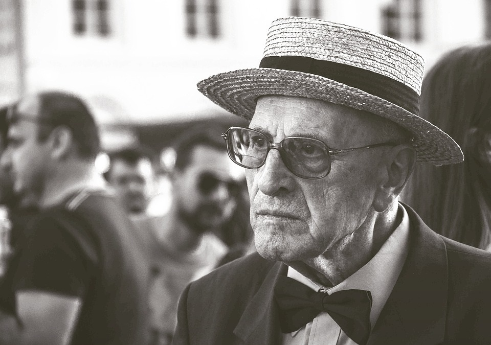
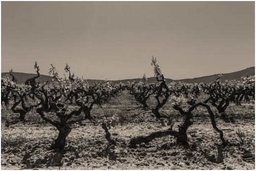
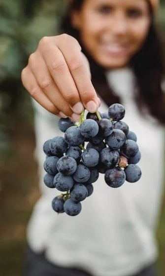

La Catalina es una empresa familiar fundada en 1950 por Bruno Picchi, quien con su espiritu visinario e innovador creó la primera bodega del Valle de Uco.
Una hectarea y 120 vides fueron el puntapié que dio comienzo a este sueño que, año tras año, se ha ido haciendo realidad, hasta llegar a las 70 hectareas que hoy descansan a los pies del cerro Manzano.
Actualmente es dirigida por la tercera generación familiar, unidos con la mision de continuar con el legado de su fundador: crear en cada botella una experiencia única.


